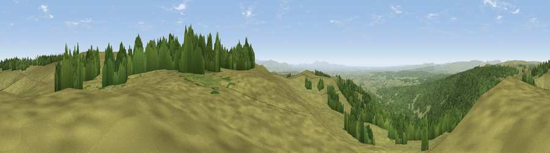

Viewpoint c11608_7187
#3218 in England · top 4% of its area beats it · —Where it is
The exact computed spot (NY 59375 80425). Click the marker for map links.
The view, rendered

A 360° render of this exact spot computed from the terrain model, tree cover and land cover — summer colours, afternoon light, calibrated against photographs of famous viewpoints. Real trees, hedges and buildings will differ in detail.
The panorama
Grey silhouette: terrain skyline in each direction (720 bearings, Earth curvature and refraction included). Dashed green: skyline with trees (+15 m) and buildings (+8 m) as obstacles. Blue strip: how far the ground is visible on each bearing.
Where the view opens
Wedge length = distance to the farthest visible ground on that bearing (vegetation-aware). Rings at 10, 25 and 50 km.
What fills the view
65% grassland · 34% woodland
Angular shares of the visible panorama (visual magnitude), not map area. Landscape diversity 0.30 (0–1 Shannon).
Key numbers
More beautiful places nearby
The staircase of upgrades: each row has a higher view potential than everything closer. Driving times are estimates from straight-line distance, calibrated against real road routing — check an actual route before setting out.
| Place | Direction | Drive | Score |
|---|---|---|---|
| Sighty Crag | NE · 1 km | ~3 min | 74.7 |
| Viewpoint near Bewcastle | SSW · 1 km | ~3 min | 76.6 |
| Viewpoint near Bewcastle | SSW · 2 km | ~5 min | 78.9 |
| Viewpoint c11644_7156 | NW · 2 km | ~6 min | 80.8 |
| Viewpoint c11995_7247 | N · 20 km | ~33 min | 82.1 |
| Viewpoint near Hepple | ENE · 46 km | ~66 min | 82.4 |
| Viewpoint c12273_7856 | NE · 47 km | ~68 min | 83.7 |
| Viewpoint c12396_7887 | NE · 53 km | ~74 min | 85.7 |
55.11654, -2.63845 · source: screening · position refined by local search. Computed location — check access rights before visiting.